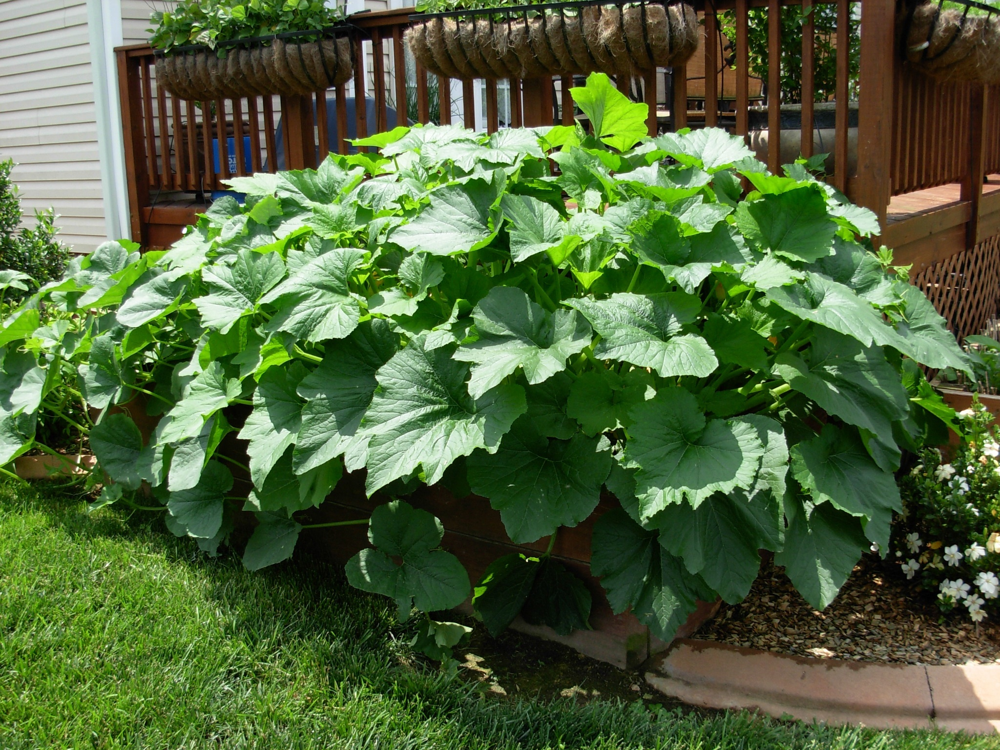
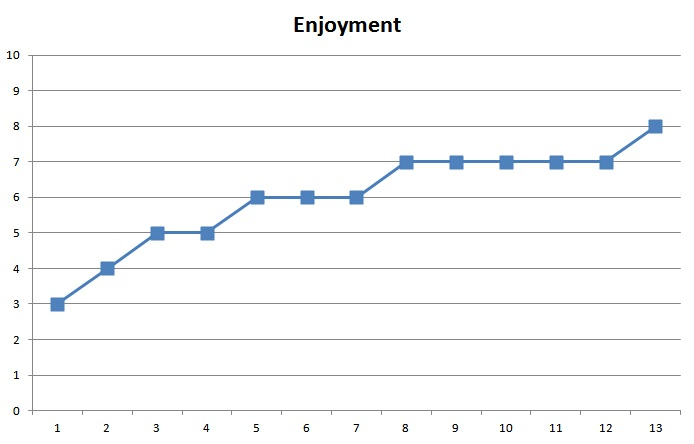
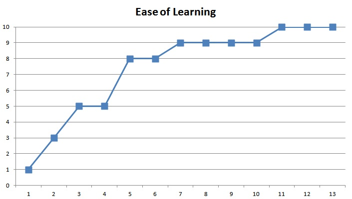
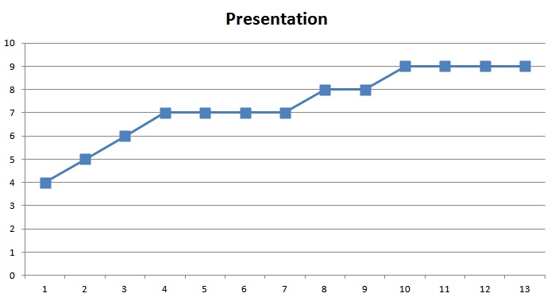
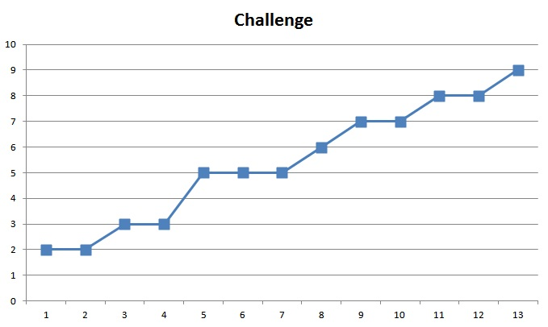

1) Design History
| Date | Author | Details of Change |
| November 8, 2011 | Christine Talbot | Initial Creation |
| November 12, 2011 | Christine Talbot | Cleaned up Instructions section and added details into Vision Statement, Characters, Story, World |
| November 16, 2011 | Eric Faust | Editted GDD content. Fixed broken image links. Updated Media section. |
| December 9, 2011 | Eric Faust | Editted GDD content to reflect real time game pace. Added Playtest Section as well as placeholder sections for
Technical Document, Demo Video, and Project Milestones. |
| December 14, 2011 | Todd Dobbs | Added google docs link to playtest form. |
| December 14, 2011 | Christine Talbot | Updated Instructions page and updated original design doc to better align with current state of the game. |
2) Vision Statement
To provide a multi-player educational game about planting and vegetables.
Veggie Harvest is essetially a real time strategy game where the player's goal is to grow more
Veggies than the computer controlled opponent. While the game will incoporate some real world
farming techniques, such as which type of soil is most effective for specific kinds of vegetables,
Veggie Harvest features a cartoony style in order to make the game more kid-friendly and to
increase player investment in the Veggies that they are growing.
3) Audience / Platform
Looking to be rated Everyone (on the ESRB scale) in order to make it accessible for a Discovery Place kiosk or exhibit.
Veggie Harvest will be built in Unity3D and deployed with the web plugin for Unity, non-professional version.
4) Legal Analysis
This game will be developed in an open-source manner. All assets will be royalty-free, open-source resources.
Veggie Harvest is intended as a teaching assignment for the students making it, it is not intended for commercial use.
This game's intellectual property will be owned by the University of North Carolina - Charlotte.
5) Characters
Players
There will be one human player playing against an AI opponent (also referred to as a player).
The player will use either a mouse or a controller button to select items on the screen, such as:
- Individual drawn Veggies
- Individual drawn Disasters
- Soil squares on the board (when planting)
- Individual Veggies on the board (when using a Disaster)
Players will select an item, then select where to put it for items that can be moved, such as:
- Individual drawn Veggies
- Individual drawn Disasters
Moving the mouse or using the controller joystick will allow the player to move the cursor on the screen.
Each player will be assigned a color for their Veggies, Yellow for the AI and Blue for the human player.
AI Characters
There will be a single AI character playing against the human. The AI will show its moves just as the human player's moves are shown.
Players are given choices based on a background timer. This timer will be affected by the Difficulty slider in the Configuration screen. The timer will be faster at higher difficulties.
The timer returns a random value between 1 and 3. The occurance of this background timer triggering will be referred to as giving choices to the players.
The AI player will follow simple rules for their behavior, such as:
- After specified delay (based on difficulty level), make all choices that are available to the AI player.
- For up to 4 veggies available within action slots and the board for the AI, will always choose to grow for a choice
- After 4 veggies are available, AI will choose to grow in most cases, but becomes more likely to destroy as the number of grow cards in the action slots increases.
- After making all choices that are available, the AI player will choose one card to play.
- If have a Disaster card, will play it first, if possible.
- If the Disaster card cannot be played, will grow a plant, if available.
- If no Disasters are available to be played, will grow a plant, if available.
- Decisions for where to grow or destroy will follow these rules:
- If choose a Disaster, will destroy own Veggies that are doubled up on their square first.
- If choose a Disaster, will destroy own Veggies that are misplanted on the wrong soil second.
- If choose a Disaster, will destroy random player's Veggies which have exactly the number of Veggies as the card drawn states, third.
- If choose a Veggie, will plant in first empty square with the correct soil, if available.
- If choose a Veggie, will plant in first square with the correct soil AND one of its own Veggies on that square, second.
- If choose a Veggie, will plant in random square which has one of its own Veggies on that square, third.
- If choose a Veggie, will plant in random empty square on the board, fourth.
These behaviors will be followed with a higher probability when the Difficulty is set higher (10% max randomness) than when it is set lower (90% max randomness). Also, the AI player will play slower
when the difficulty is set lower than when it is set higher (10 seconds to 1 second range).
General Requirements of Play
The current scores for each player will update at a regular interval in their respective sides of the board.
As each Veggie is played, an animation of the growth will be played. All selections on the board will provide appropriate sound feedback including button clicks and error sounds.
Action items that are selected on the player's side will be highlighted with a medium blue to show that it is selected.
The message center will display hints on where best to plant the veggie or how to use the Disaster card.
The background variable timer will have the following effects on the players' choices:
- 1 - Choose one Card (A new choice is presented)
- 2 - Choose two Cards (Two new choices are presented)
- 3 - Choose three Cards (Three new choices are presented)
At regular intervals, one new Veggie (of the same type) will be grown in each square that has Veggies on it EXCEPT
the squares where there are more than one Veggie set on it. That is to say, the count of a Veggie on each square will
go up by one regularly unless the sqare has more than one Veggie on it.
Players can adjust the difficulty of play or whether hints are on/off while playing the game to increase or decrease the difficulty of the game real-time.
The game will end when all the board squares have at least one Veggie. On end game, a You Win! screen or a You Lost! screen will be
shown to the player, based on their score, along with appropriate sound effects.
They will be offered an opportunity to play again.
6) Story
|
Veggie Harvest is a game that simulates the
lifecycle of plants. Their growth in different preferred
soils, as well as their death due to bugs, overwatering,
and droughts mimic real-life issues that farmers and home
gardeners encounter.
|

|
| |
|
|
Just as in real-life, the different Veggies prefer
different types of soils, with Volcanic Soil being the
most fertile soil for most plant types. You'll find that
blueberries, watermelons, and pumpkins will prefer a Sandy
Soil for its drainage properties. Potatoes, carrots, and
beets prefer loamy-type soils (Top Soil), while cucumbers, broccoli,
and cabbages like the Hard Clay Soils. Also, growing too
many Veggies too close together can actually stunt the
growth of those Veggies.
|
| |
|
We took these concepts and translated them into a game for
one player versus the computer. The board consists of a 3x6 grid with 6
squares being Top Soil (most common soil), 5 squares being
Sandy Soil, 5 squares being Hard Clay Soil, and only 2
squares as Volcanic Soil.
|
|
| |
|
|
The player is given one color (light blue) to represent the Veggies they have
grown. Veggies and Disasters enable planting the different Veggies
and killing the Veggies in different ways.
|
| |
|
At regular intervals, any of Veggies on the board will
grow another Veggie. Players will be given the opportunity to plant new Veggie(s), and possibly
destroy Veggies on the board. When the last plot of soil
is filled, the game is over. The player (human or AI) with the most
Veggies on the board wins.
|
|
7) World
The world will consist of the game board in the center of the screen. The human player's cards and score will be below the
board on the bottom of the screen. The score of the AI opponent will be above the game
board, along with the AI player's cards.
The game board will be viewed from the top-down perspective. It will consist of a
3x6 grid of 18 squares. These squares will consist of 6 topsoil, 5 clay, 5 sand, 2 volcanic.
Each square will have a relevant graphic for the type of soil it represents. On each square
will be shown the growing animations (when appropriate per the game), as well as
what Veggie(s) are planted there. Each Veggie will have a different colored background to represent
which player planted it and whether it was planted in the proper soil.
Items on the screen are highlighted (if selectable in the current state) based on the movement of the
mouse or joystick by the player that is currently performing their turn. Examples of highlightable items based on current state include:
- If nothing selected but cards are available to play, only the cards at the bottom of the screen will be selectable.
- If you have something selected (Veggie), then you can only select squares on the board if it is a Veggie.
- If you have something selected (Disaster), then you can only select Veggies on the board that can be targeted by a Disaster.
On the bottom right, there will be a message prompt that will tell the player how to best play their cards, such as:
- Tomatoes get planted on Volcanic soil
- Disaster of 4 can destroy up to 4 Veggies on the board
Play is completely real-time, but the AI player's decision making will be slowed down to enable the human players to see what is being done during the AI
player's moves.
8) Media List
Fonts
Images
- 1.png
- 2.png
- 3.png
- 4.png
- 5.png
- 6.png
- AI_transparency_layer.jpg
- Board-old.png
- Board.png
- aichips.png
- alldestroychips.png
- allveggiechips.png
- arrow.png
- beet-growing4.png
- beet-growing5.png
- beet_ai.png
- beet_ai_wrong.png
- beet_chip.jpg
- beet_human.png
- beet_human_wrong.png
- beet_selected.png
- beets_ss.jpg
- blueberries-growing4.png
- blueberries-growing5.png
- blueberries_ai.png
- blueberries_ai_wrong.png
- blueberries_chip.jpg
- blueberries_human.png
- blueberries_human_wrong.png
- blueberries_selected.png
- blueberries_ss.jpg
- broccoli-growing4.png
- broccoli-growing5.png
- broccoli_ai.png
- broccoli_ai_wrong.png
- broccoli_chip.jpg
- broccoli_human.png
- broccoli_human_wrong.png
- broccoli_selected.png
- broccoli_ss.jpg
- cabbage-growing4.png
- cabbage-growing5.png
- cabbage_ai.png
- cabbage_ai_wrong.png
- cabbage_chip.jpg
- cabbage_human.png
- cabbage_human_wrong.png
- cabbage_selected.png
- cabbages_ss.jpg
- carrot-growing4.png
- carrot-growing5.png
- carrot_ai.png
- carrot_ai_wrong.png
- carrot_chip.jpg
- carrot_human.png
- carrot_human_wrong.png
- carrot_selected.png
- carrots_ss.jpg
- choices.PNG
- choices1.PNG
- clay.png
- cucumber-growing4.png
- cucumber-growing5.png
- cucumber_ai.png
- cucumber_ai_wrong.png
- cucumber_chip.jpg
- cucumber_human.png
- cucumber_human_wrong.png
- cucumber_selected.png
- cucumbers_ss.jpg
- destroy1.jpg
- destroy1_selected.png
- destroy2.jpg
- destroy2_selected.png
- destroy3.jpg
- destroy3_selected.png
- destroy4.jpg
- destroy4_selected.png
- destroy5.jpg
- destroy5_selected.png
- destroy6.jpg
- destroy6_selected.png
- dying1.jpg
- dying2.jpg
- dying3.jpg
- dying4.jpg
- growing1.png
- growing2.png
- growing3.png
- growing3.png.orig
- growing4.png
- growingplants.png
- human_transparency_layer.jpg
- humanchips.png
- msgcenter.png
- planted1.jpg
- planted2.jpg
- planted3.jpg
- planted4.jpg
- potato-growing4.png
- potato-growing5.png
- potato_ai.png
- potato_ai_wrong.png
- potato_chip.jpg
- potato_human.png
- potato_human_wrong.png
- potato_selected.png
- potato_ss.jpg
- pumpkin-growing4.png
- pumpkin-growing5.png
- pumpkin_ai.png
- pumpkin_ai_wrong.png
- pumpkin_chip.jpg
- pumpkin_human.png
- pumpkin_human_wrong.png
- pumpkin_selected.png
- pumpkins_ss.jpg
- sand.png
- scoring.png
- selected_transparency_layer.jpg
- selectedchips.png
- tomato-growing4.png
- tomato-growing5.png
- tomato_ai.png
- tomato_ai_wrong.png
- tomato_chip.jpg
- tomato_human.png
- tomato_human_wrong.png
- tomato_selected.png
- tomatoes_ss.jpg
- topsoil.png
- volcano.png
- watermelon-growing4.png
- watermelon-growing5.png
- watermelon_ai.png
- watermelon_ai_wrong.png
- watermelon_chip.jpg
- watermelon_human.png
- watermelon_human_wrong.png
- watermelon_selected.png
- watermelon_ss.jpg
- white_texture.png
- white_texture.png.orig
Textures
- Blue.png
- Board.png
- CardSpace.png
- Controls.png
- Destroy.png
- DestroyButton.png
- Grass (Hill).jpg
- Green.png
- Grow.png
- GrowButton.png
- New Board 2.png
- New Board.png
- Red.png
- UNCCLogo.png
- Wood.png
- Yellow.png
- configuration.png
- credits.png
- gameover.png
- instructions.png
- moss.png
- stem_blueberry.jpg
- stem_cabbage.jpg
- stem_pumpkin.jpg
- stem_tomato.jpg
- veggieharvest.png
Sounds
- applause.wav
- applause_cheers.wav
- boing2.wav
- boo.wav
- smooth_button_click11.wav
- background3.wav
1) Board Game Reviews
2) Video Game Reviews
13 Playtesters were sampled during our Video Game play test session. Players were allowed to play the game for 5 minutes. Then asked to complete
the playtest form (linked above).
a. Objective Data Summary:
- Most players did not choose to read the game instructions before starting to play.
- Players never played for more than 5 minutes. This was primarily due to time constraints with the playtest session.
- Most players said that they did not win their game. This reflects the game's scoring system being bugged.
- Most players were willing to play the game again if given the opportunity.
b. Subjective Data Summary:

- The average of "How much did you enjoy the game" was 6.0, the variance was 2.00
-------------------------------------------------------------------------------------

- The average of "How easy was it to learn the game" was 7.4, the variance was 8.59
-------------------------------------------------------------------------------------

- The average of "How would you rate the presentation" was 7.3, the variance was 2.56
-------------------------------------------------------------------------------------

- The average of "How challenging was the game" was 5.3, the variance was 5.59
c. Short Answer Summary:
- Seven out of ten play testers experienced confusion about something during gameplay.
- Overall, play testers said they were not frustrated by the game, though three said they would have liked higher game speed.
- Perhaps due to their limited time with the game there were a number of uncertain responses to whether the game required strategy.
On the whole, most play testers did feel the game required strategy.
- The most common responses to what the play testers enjoyed the most about the game was having the plants grow or destroying them.
- The most common respsonse to what the play testers didn't enjoy about the game was losing (not knowing why their scores were so low) and the game speed.
- The most common play tester suggestions were to improve the coloring and to increase the game speed.
Analysis of Data
Most of the play testers seemed to moderately enjoy playing the game. The vast majority of players said that they would wish to continue playing or would like to play
again.
Several play testers mentioned that they felt the game needed to play faster. For example, be able to
have more cards on their side to choice from or to respawn their choices faster. It was also mentioned that the plants grew at a pace they felt was too fast. To fix this
we plan to adjust the timers controlling the grow cycle and the player draws.
A common problem play testers experienced was periods of confusion about their standing in the game state. That is to say, they did not have a good sense of whether they
were winning or losing, how much they were winning or losing by, or how they were performing from a "I'm playing this game right" perspective. To fix this issue we plan
to increase the visibility of the player scores, to more intuitively display the board state (using colors for who controls various plants), to decrease the growth rate
of plants to allow the player time to internally calculate the game state, and to increase the rate at which the player gets to play cards to minimize their down-time.
Another piece of feedback was to clarify (ie. give some sort of feedback) whether the player had a Veggie or Destroy card in their hand selected or not. To fix this issue
we will highlight the card a player has selected to let them know what card in their hand is "active".

{kind=link}